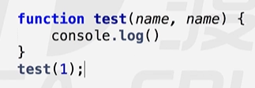
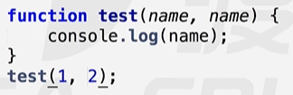
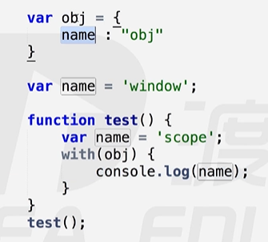
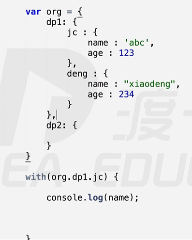
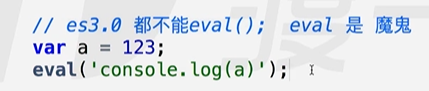

一、es5严格模式
现在使用的方法是基于es3.0 + es5.0的新增方法使用的。如果它两产生冲突那么要用es3.0的方法解决，但是下面讲的是如何用es5.0的方法解决
es5.0严格模式：当es3.0和es5.0产生冲突的部分就是es5.0，否则用es3.0
启动方式：
- “use strict” 不再兼容es3的一些不规则语法。使用全新的es5规范。
- es5.0严格模式的两种用法：
全局严格模式：写在页面的逻辑的最顶端（前面可以有空格回车但是不能其他代码）
局部函数内严格模式（推荐）
- 为什么严格模式开启的标志就是一行字符串？
- 原因是它不会对不兼容严格模式的浏览器产生影响（比如一些老的浏览器，它还没有更新到es5，如果严格模式是以函数的方式开启的话，他会直接报错）。
- 语法
不支持with,arguments.callee,func.caller
变量赋值前必须声明
局部this必须被赋值，用new构造对象，或call改变this指向(Person.call(null/undefined) 赋值什么就是什么)
拒绝重复属性和参数：es3重复属性和参数不报错，es5里面重复参数报错，但是重复属性不报错

- 输出：undefined

- 输出：2
二、with用法
- with可以改变作用域链，它可以让with里面的代码作用域链的最顶端变成with括号里的对象，也就是说with括号内的代码最直接的AO是width括号内的对象

- 此处name的值先在对象obj里面找
- 简化代码：命名空间真正的用法

- with缺点：with改的是作用域链，作用域链非常复杂，修改之后系统内核会消耗大量的效率更改作用域链，会让程序变得非常慢，比方说如果作用域链是10层，你新加了一层，系统就会修改11层，所以速度变慢
三、eval用法
- 能够执行eval内部的字符串，将eval内部的字符串当作代码来使

- 输出：123
- eval功能很强大，他还能改变作用域，情况非常复杂，但是在es3里都不能使，常说“eval是魔鬼”